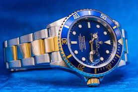

The Rolex Submariner is one of the most legendary dive watches ever made. First introduced in 1953, it was designed for underwater exploration and quickly set the standard for dive watch performance and style. Known for its water resistance, rotating bezel, and clean, sporty design, the Submariner is both a professional tool and a luxury timepiece. Over the decades, the Submariner has evolved with modern updates while staying true to its classic look. Whether in stainless steel or precious metals, with a black or green bezel, the Submariner remains a favorite among divers, collectors, and watch enthusiasts around the world.
